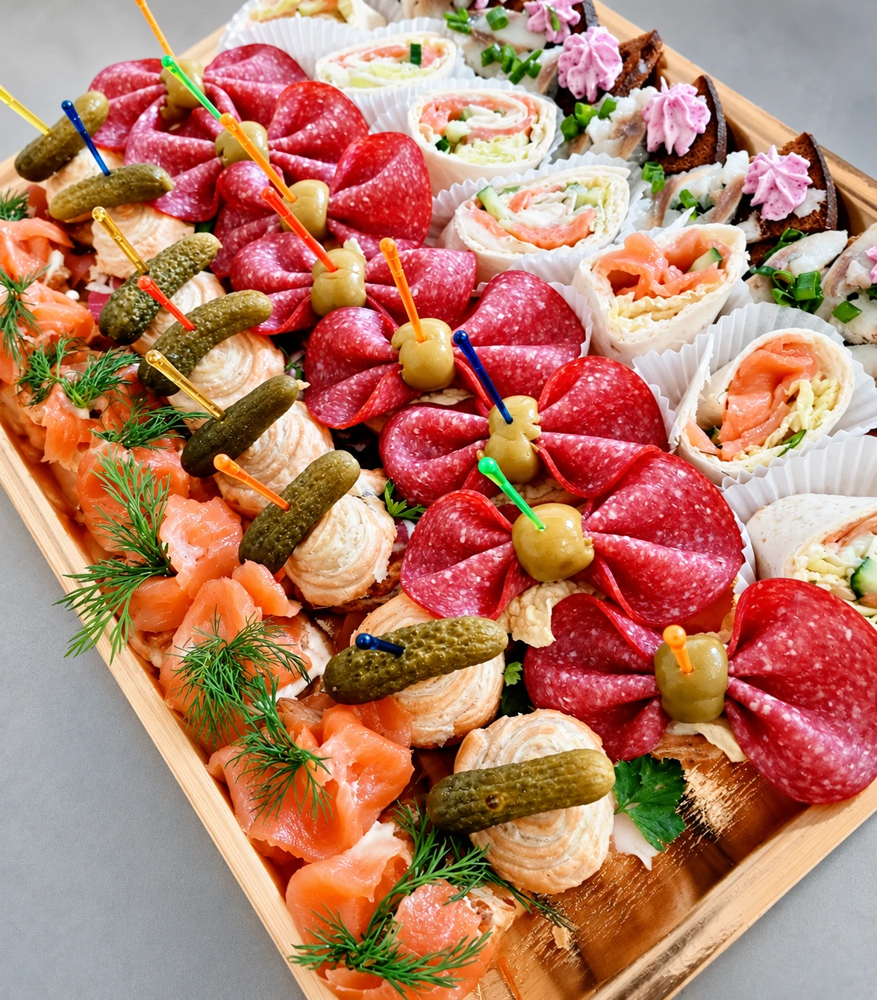

KAVINĖ · VILNIUS
Geras skonis suburia
Užsukite į „Liepų kelią“ skanių pietų ir jaukių akimirkų prie bendro stalo.

PRIEŠ UŽSUKANT
Jūsų planai.
Susitarkime iš anksto.
Didesnei kompanijai
Planuojate užsukti kartu su kolegomis ar artimaisiais? Paskambinkite ir aptarkime apsilankymo laiką bei žmonių skaičių.
Turite klausimų dėl patiekalų?
Dėl sudėties, alergenų ar konkrečių pageidavimų pasiteiraukite prieš atvykdami – pasirinkimą aptarsime telefonu.
IŠ ARČIAU